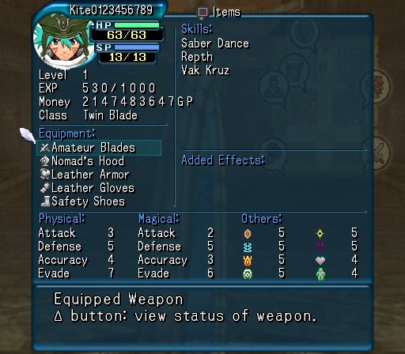

After many months of procrastination, I’ve finally split up my cgrr project and
transferred it to github. It took quite a while, but in the end I think it will
be much more maintainable and useful with each of the parser modules taken
separately than it would be with them all jammed together pretending to be
plugins for some yet-unwritten master program. If I want to write some wrapper
around them all later, they’ll perfectly well support it, but until then, all
the plugin stuff is just an extra mess—YAGNI.
Written by Tracy Poff in misc on Mon 02 September 2013. Tags: dot hack,
So, since I put quite a bit of work into it, let’s use my new save file modification powers to find the max value for money…
After some testing, I’m still not sure exactly what the max value is. 0x7FFFFFFF works, and so does 0x80000000, but some higher values (like 0xCFFFFFFF) don’t work. They give you smaller amounts of GP than you should have. For instance 0xFFFFFFFF gives you 5. There’s some kind of wrapping happening at various places, but I don’t really know quite how. Doesn’t matter. No one needs more than two billion GP, anyway, so I’m calling that a limit.

640K should be enough for anyone.
Written by Tracy Poff in misc on Mon 02 September 2013. Tags: dot hack,
I wrote last time that I was going to modify a save in order to test what range of values was acceptable. Time to get to work on that. Well, actually, time to continue work.
I’ve written a program that can extract information from the saves and (in principle) write it back to them. I’ve been using Ross Ridge’s mymc utility to get the save file off the memory card. It seemed pretty convenient, since mymc is written in python, as is my program (inventively called “dothacksaveparser.py”). I figured that when it came time to actually modify files, I’d just import mymc do my magic, and problem solved.
It was not to be.
First, mymc is an interactive program, and there’s no easy way to use it as a library—in fact, if you try to import it, it’ll just kill your program. Bad. There important initialization stuff done in the main function, so I can’t just just wrap it all in if name == “main“, either. Maybe I’ll eventually get it sorted out into a more useful form, but for now, importing is out.
No problem, I though, I can just run the thing and have take its input from stdin and print to stdout, and it’ll be pretty much the same thing. So I try it. And… I’m getting files of the wrong size.
The save files for .hack//Infection are 34096 bytes. Somehow, when I had the files output to stdout, a hundred or so bytes were getting added. Mysterious. I compare the files, and notice that they look pretty similar, but misaligned. In fact, there are extraneous 0x0D bytes added throughout. A little closer look reveals that each extra 0x0D occurs before a 0x0A that was in the original file. Now, those are some low bytes… control codes… I look it up, and, indeed, python is adding a carriage return before each ‘line feed’. Of course, since it’s a binary file, there aren’t actually any line feeds, but… there you have it.
Some research revealed the right solution to that problem, though:
if sys.platform == "win32":
import os, msvcrt
msvcrt.setmode(sys.stdout.fileno(), os.O_BINARY)
Useful snippet of code.
So, problem solved… almost there. Now I can read the files in, and I know how to calculate the checksum and export the files again. One problem: the function for adding files to a memory card will not accept input from stdin. Why not? Why can I get files extracted to stdout but not added from stdin?
Fine. I’ll write the files to disk so that they can be added.
I do all that, and it’s time for a test. No modifications. Just read the file in and spit it back out. And… failure. Bizarrely, a huge number of bytes have been modified in the memory card file, but I can’t see why. Executing the same commands manually works fine. What’s happening? I try again, and… it works. Let it be known that the worst words to hear are “intermittent error”. I have no clue what went wrong the first time. I’m going to hope that it was… I don’t know… solar flares.
Anyway, this story’s drawing to a close. Having a successful test on unmodified files, what’s left is to try a simple modification. How about giving Kite 15000GP?
I’m rich. As Kite is my witness, I’ll never go hungry again!
Written by Tracy Poff in misc on Mon 02 September 2013. Tags: dot hack,
Offset 0x004B changed from 03 to 04. That’s probably the quantity of fortune wire Kite has. The question at the moment is whether fortune wire is always stored at that offset or whether it’s tied to some other value that marks it as fortune wire.
Offset 0x687E changed from FF to 00. Not sure what that’s about.
Offset 0x749C changed from E8 to DE. Now, the one after that is 03, and 0x03E8 is 1000 in decimal, and 0x03DE is 990. I’d say I’ve found where money is stored. I’m guessing it’s a 32-bit value, too, but it may not be—or maybe there’s a maximum enforced elsewhere. For now, though, I’m going with it.
Now, as for that mysterious 0x687E… I did accidentally speak to a person running around town. Didn’t actually hit ‘talk’ or ‘trade’, but I did open up that menu. Maybe it’s tracking who I’ve spoken to? Easy way to test that. Load save 0030, buy some fortune wire without talking to anyone, save again: save 0032.
And… oh dear. Lots of changes in the region I guessed to be stats and/or inventory. I’ll be ignoring those, for now. 0x687E is indeed still FF in the new save, so I’m going to tentatively assume I was right about that one.
So, I was going to test out what the money limit was, but when I made a modification, the game told me the save file was corrupt. After some careful checking, I’m thinking that there’s a checksum somewhere.
…and I just wasted an hour that I didn’t have to waste. There is indeed a checksum. There’s a file BASLUS-20267DOTHACK in the save directory on the memory card, which I believed to contain the checksum. I was right about this. However, I was wrong about exactly what the checksum was. In these files, I found four bytes changing from save to save. I naturally assumed I was looking at a 32-bit checksum. However, it didn’t seem to be a simple accumulator-based checksum, nor a CRC-32. So, I now suspected it was either a custom checksum (why?) or they were only performing the sum on part of the file. This was looking like a big undertaking.
After a while, I noticed that when I was playing around with that file, modifying what I thought to be the checksum, I was getting weird behavior. Particularly, I noticed that the clock for how long the save had been played was different.
Ah-ha!
Two of those bytes were actually from the clock. It’s only a 16-bit checksum—a simple accumulator. Now that I know it, I can calculate the appropriate checksum for my modified file and insert it.
That’ll have to wait for next time, though. I’ve had quite enough save file hacking for one night.
Written by Tracy Poff in misc on Sun 01 September 2013. Tags: dot hack,
Okay, enough preliminaries. Time to log in to The World. We’re treated to a shot of Kite appearing in Mac Anu, meeting up with Orca.
Got Orca’s member address. Entered Bursting Passed Over Aqua Field. Killed some stuff. Plot happens!
Okay, new save (0025). Diff them…
Oh! So many changes! Where to begin?
Previously, the section after the user and character names was just a repeating string of FFFFFF00. Now, there’s another byte pattern repeating throughout that section:
00 00 0A 05 03 00 0A 05 04 00 0A 05 05 00 0A 05
01 00 0D 05 FF FF FF 00 FF FF FF 00 FF FF FF 00
FF FF FF 00 FF FF FF 00 FF FF FF 00 FF FF FF 00
FF FF FF 00 FF FF FF 00 FF FF FF 00 FF FF FF 00
FF FF FF 00 FF FF FF 00 FF FF FF 00 FF FF FF 00
FF FF FF 00 FF FF FF 00 FF FF FF 00 FF FF FF 00
FF FF FF 00 FF FF FF 00 FF FF FF 00 FF FF FF 00
FF FF FF 00 FF FF FF 00 FF FF FF 00 FF FF FF 00
FF FF FF 00 FF FF FF 00 FF FF FF 00 FF FF FF 00
FF FF FF 00 FF FF FF 00 FF FF FF 00 FF FF FF 00
That repeats several times.
A byte at 0x0D37. has change from 00 to 01. Starting at 0x12B8, lots of 4-byte sections have changed from FFFFFF00 to something else. The last one is at 0x1DB8-0x1DBB. Just after that, a couple of 4-byte sections changed from 00000000 to something else. At 0x1E7A, two bytes change from 0000 to 0401. There’s a region from 0x1EC4 to 0x2193 that was previously filled with FF. Now, it’s got some other stuff scattered about. There are 1-byte changes at 0x2220, 0x2224, and 0x226A. Two bytes change at 0x246A-0x246B. One byte at 0x421C. One at 0x4FE5. Four bytes at 0x523C and two at 0x5278.
…
Well, the point is that there are lots of changes. There’s no way I can possibly understand them all by just looking at this one diff.
That said, I can probably sort out at least one thing: more mail. I had a new unread mail when I saved, so let’s look at the area where the previous mail was—0x23A4. Previously, it was 02 when the mail was unread, and 04 when the mail was read. Now, there’s a byte changed up above here: 0x226A has changed from 00 to 02. I’m guessing that byte represents the new email. Save 0026: I’m right.
Also, given that the two bytes before that one are 04, I’m guessing those represented the other two emails that I read before making the first save.
Okay, try to log in to The World again… all servers are down for maintenance. Well, let’s go ahead and make save 0027, just to see what happens… ah, two bytes changed: 0x2944 changed from 00 to 07, and 0x5548 changed from 01 to 03. Why?
Anyway, “I should post on the Board about Yasuhiko.” Okay, message posted, and I have new mail. First, though: save 0028.
Several changes. One at 0x226B—that’ll be the new mail. Two bytes at 0x246B-0x246C—don’t know about this one. 0x2944 changed from 07 to 03. Given its location, that should be the post I made to the board, I’m thinking. Also, 0x5548 changed from 03 to 33. Don’t know what that one does, either. Some kind of flag, I guess.
That email, it’s from “Au]$”. How mysterious. Save 0029. And now I see tha the email at 0x226B shows up as read, and the byte at 0x5548 has changed from 33 to 73. That’s surely tracking the state of the game. It’s taken on five different values, so far.
Well, let’s log in to The World, again. Ah, there’s BlackRose, behaving suspiciously. Well, first order of business: save 0030.
So many changes! There are lots of small changes between 0x13F8 and 0x1E3A. Given the location, I’m guessing those are related to BlackRose—either inventory or stats, or maybe both. The ones that changed before probably belonged to Kite and Orca.
0x5548 changed again, to F3. A couple of other bytes changed near there, too: 0x554F-0x5550 changed from 0000 to C015. 0x54F8 changed from 01 to 00. 27 bytes changed starting at 0x81B4, and 15 starting at 0x81E4.
Whew! There have been a lot of changes, and I don’t think I’ve really deciphered much more, yet, but I’m now in a position to figure out where the player’s inventory is stored. That’ll probably be a big endeavour, though, so I’m going to take a break, here.
Written by Tracy Poff in misc on Thu 29 August 2013. Tags: dot hack,
A tiny break from actually mapping out memory to post my current memory map. Mostly empty, but Rome wasn’t built in a day, right?
| Location |
Note |
| 0000-000D |
Character name |
| UNKNOWN |
|
| 0018-0029 |
User name |
| UNKNOWN |
|
| 2236 |
Desktop Image |
| UNKNOWN |
|
| 23A4 |
Reading the email “Version Update” changed this from 02 to 04 |
| UNKNOWN |
|
| 2864-2867 |
News |
| UNKNOWN |
|
| 2889 |
News |
| UNKNOWN |
|
| 28E4-28F7 |
Board |
| UNKNOWN |
|
| 2914-2917 |
Board |
| UNKNOWN |
|
| 2E54-2E55 |
Board |
| UNKNOWN |
|
| 2EB4-2EB5 |
Board |
| UNKNOWN |
|
| 2EE4 |
Board |
| UNKNOWN |
|
| 2F14 |
Board |
| UNKNOWN |
|
| 32D4-32D8 |
Board |
| UNKNOWN |
|
| 3304-3307 |
Board |
| UNKNOWN |
|
| 3334-333C |
Board |
| UNKNOWN |
|
| 3364-3366 |
Board |
| UNKNOWN |
|
| 3394-3395 |
Board |
| UNKNOWN |
|
| 3484-348A |
Board |
| UNKNOWN |
|
| 5507 |
??? Changed from 80 to C0 when starting The World |
| 8400-8403 |
Time played in 1/60 second resolution |
| UNKNOWN |
|
There’s probably lots of padding in there, and it’s probable that the section with the board posts in it is used for nothing else. If everything works the way it looks like it does, so far, then I’ve got a general idea of what about a quarter of the save file is for. Not too bad. The next few saves will probably give me a picture of how character stats and inventory are stored, so that should be another big chunk of it. Progress!
Written by Tracy Poff in misc on Thu 29 August 2013. Tags: dot hack,
Enough of the desktop. Time to play some games! Almost, anyway. If you enter The World’s main menu, then close it and save (0011) without doing anything else, 0x5507 changes from 0x80 to 0xC0. What does it mean, exactly? Not sure.
Before entering The World itself, we can read posts on the board, which can also add items to the keyword list. Time for some diffs (0012-0016)…
The first thread, “System Explanation” seems to map to a 20 byte region from 0x28E4 to 0x28F7. Problem: there are only nineteen posts. Somewhere in the middle, and extra byte got changed, but I’m not sure where. Well, I can come back to it later. Anyway, like the news items, these start as 0x01 and change to 0x03 when you read them.
Might as well map out the other threads on the board, while I’m at it (0017-0024)…
Okay, results time. They all follow the same pattern as above. Worthy of notice: each thread’s posts begin at 0x???4 (e.g. 0x2914) and continue from there. I’m guessing there will be quite a few padding bytes in there.
Based on what I know so far, I’m guessing that the region from about 0x2864 to about 0x40E3 is reserved for flags like that. I know for sure that there’s a mail item flag at 0x2864 and a board post at 0x348A, but the region is zeroes up to 0x40E3, so that looks like an upper bound. Of course, that’s far more bytes than would be needed for this kind of thing, so it’s possible that there’s other stuff in there, too.
I think that really is everything you can do before playing the game. Next time: The World!
Written by Tracy Poff in misc on Wed 28 August 2013. Tags: dot hack,
I was forced to read some email before making the first save, but not all of it. New diff: read the final email.
Diff the files, ignore the time being different, and there’s a change in only a single byte: 0x23A4 changes from 02 to 04. Hmm. This’ll have to wait until I’ve got more emails, I think. Incidentally, that’s a lonely number in a sea of zeros. Probably this region will be filled in as events happen—maybe it’s a region for flags like reading email and news items. Speaking of news, why not check out that?
Read the top news item, diff the saves… another single byte change. 0x2864 changes from 0x01 to 0x03.
Read the second news item, diff the saves… one byte, again. 0x2865 changes from 0x01 to 0x03.
Now, I’m not superstitious, but I think I’m seeing a pattern, here. Have a look at this region of the file:
Offset(h) 00 01 02 03 04 05 06 07 08 09 0A 0B 0C 0D 0E 0F
00002860 FF FF FF FF 03 03 01 01 00 00 00 00 00 00 00 00 ÿÿÿÿ............
00002870 00 00 00 00 00 00 00 00 00 00 00 00 00 00 00 00 ................
00002880 00 00 00 00 00 00 00 00 00 01 00 00 00 00 00 00 ................
00002890 00 00 00 00 00 00 00 00 00 00 00 00 00 00 00 00 ................
000028A0 00 00 00 00 00 00 00 00 00 00 00 00 00 00 00 00 ................
000028B0 00 00 00 00 00 00 00 00 00 00 00 00 00 00 00 00 ................
000028C0 00 00 00 00 00 00 00 00 00 00 00 00 00 00 00 00 ................
000028D0 00 00 00 00 00 00 00 00 00 00 00 00 00 00 00 00 ................
000028E0 00 00 00 00 01 01 01 01 01 01 01 01 01 01 01 01 ................
000028F0 01 01 01 01 01 01 01 01 00 00 00 00 00 00 00 00 ................
00002900 00 00 00 00 00 00 00 00 00 00 00 00 00 00 00 00 ................
00002910 00 00 00 00 01 01 01 01 00 00 00 00 00 00 00 00 ................
Above, it’s all 0xFF for a while, and below, it’s all 0x00 for a while. Reading news items flipped a bit on 0x2864 and 0x2865. I’ve got three unread news items left, and 0x2866 and 0x2867 are both 0x01, but I was hoping for three in a row. However, 0x2889 is also 0x01, and it’s pretty nearby, so my guess is that reading these three news items will switch all three of those to 0x03. Time for some testing…
Yep! The three bytes I predicted changed, in order, when reading the news items. My guess is that 0x01 means the news item is visible, and 0x03 means it’s been read. Probably the bytes between these are for other news items.
What else is there to explore? The Desktop Image can be changed, here, so let’s check that. Changing from Orange Blossom to Red Eye to Blue Moon causes 0x2236 to change from 0x31 to 0x32 to 0x33, respectively.
That’s pretty much all there is to be seen, before actually logging in to The World and starting the game proper. About 0.2% done mapping the save file. Isn’t it rewarding?
Written by Tracy Poff in misc on Sun 25 August 2013. Tags: dot hack,
New project: learn to reverse engineer file formats. Specimen: .hack//Infection.
I picked up a tool that extracts files from PS2 memory cards. Cheating? Maybe a little. I’ll worry about that later.
The first thing to do is start a new game for experimental purposes.
I’ve filled in names with the maximum possible length so that I can tell exactly much room is dedicated to them in the save file.
I’m forced to read some of the emails before saving, but then…

Three minutes, thirty-seven seconds. Saving in slot 1, before I’ve ever entered the game for the first time. Let’s see what that save file looks like.
00000000 4B 69 74 65 30 31 32 33 34 35 36 37 38 39 00 00 Kite0123456789..
00000010 00 00 00 00 00 00 00 00 48 61 63 6B 65 72 30 31 ........Hacker01
00000020 32 33 34 35 36 37 38 39 30 31 00 00 00 00 00 00 2345678901......
Well, there are the names I put in, right at the beginning. The character’s name is stored in 0x0000-0x000D, and the player’s name is stored in 0x0018-0x0029.
There’s not much else that we’ll be able to find from just one save, I guess, but we can take a stab at finding where the time is stored. Let’s just wait a few seconds, then make another save.
Great. Extract the save again and compare the two…
Offset(h) 00 01 02 03 04 05 06 07 08 09 0A 0B 0C 0D 0E 0F
00008400 F7 32 00 00 40 00 10 00 80 00 00 08 00 01 40 00 ÷2..@...€.....@.
vs.
Offset(h) 00 01 02 03 04 05 06 07 08 09 0A 0B 0C 0D 0E 0F
00008400 29 38 00 00 40 00 10 00 80 00 00 08 00 01 40 00 )8..@...€.....@.
Just two bytes differ. The PS2 is little-endian, so we should read those as 0x3829 and 0x32F7. They differ by 1330, in decimal. 1330? The time should differ by 22 seconds. Hmm. Divide by 22, and let’s see what we get: 60.454545…. I deduce that the time is stored with 1/60 of a second resolution.
They can’t be storing the time in two bytes—that’s only enough for about 18 minutes. Three bytes would be enough for about 77 hours, but I imagine they want to be able to track at least 99 hours, so I’ll go out on a limb and assume that they’re storing the time as an ordinary 32-bit integer. So, time is stored in 0x8400-0x8403.
Hacking session 1 complete, I figure. That’s 4 bytes for the time, 14 bytes for the character name, and 18 bytes for the user name. 36 bytes down, 34060 to go.
I was working on Project Euler problem 92,
and having a great deal of trouble making my program run fast enough. I’m aware
of a trick that can be used to reduce the problem space, but I thought that with
only ten million numbers to check, it should be possible to do it
straightforwardly and just check them all, as long as I wasn’t too inefficient
doing it.
My first successful version took about three minutes to run–much too slow. I
eliminated a duplicate call to an expensive function, which brought me down to
about two minutes, and at length I managed to reduce the runtime down to about
thirty seconds–much better, though still very slow. I tried some alternate
techniques and just couldn’t make it go any quicker while still using a brute
force approach.
Now, there’s one important thing I haven’t mentioned: on the Windows PC I’m
using for development, the version of gcc included with the Haskell Platform
doesn’t work. I can’t figure out why, but it makes it impossible to compile
Haskell programs, so I’ve just been running them in the interpreter. Well, that
gives away the ending to this anecdote: I copied the program to a (much slower)
Linux PC and compiled it, and it ran in about five seconds. Even my first, very
inefficient attempt would have been fast enough to satisfy the one minute rule.
But I learned a bit by trying to make the interpreted version fast enough to pass.
Lessons:
- Squaring a number with (n^2) is significantly slower than doing it with (n * n).
- Arrays are faster to access than even fairly small lists.
- It’s faster to compose several functions and then map them to a list than to
repeatedly map individual functions.
Of course, these apply to programs run through the interpreter–it’s quite
possible that at least the first of these might not hold if the program is
compiled. Maybe I’ll test it, some time.